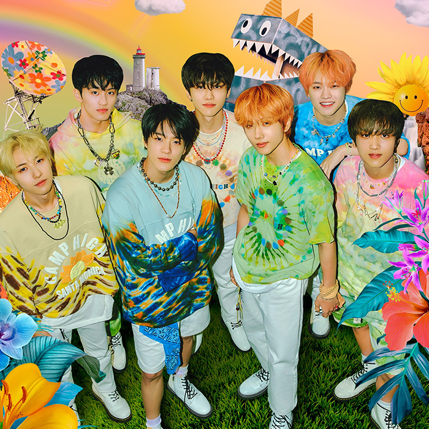

What's the Hit?
Nayeon | Pop!
All About Music!
Pop! was composed by Nayeon, a member of the iconic South Korean girl group Twice. Nayeon recorded this song for her debut extended play, Im Nayeon. It was released as the EP's lead single on June 24, 2022.
The song has a bubblegum beat and addictive melody which catched the attention of netizens. It was a hit in social media platforms and thousands danced to its beat together with its famous dance moves.
Pop! was composed by Nayeon, a member of the iconic South Korean girl group Twice. Nayeon recorded this song for her debut extended play, Im Nayeon. It was released as the EP's lead single on June 24, 2022.
The song has a bubblegum beat and addictive melody which catched the attention of netizens. It was a hit in social media platforms and thousands danced to its beat together with its famous dance moves.
ARTISTS:
NCT Dream

Songs:
We go Up
119
Candy Light
Chewing Gum
Boom
GO
Hello Future
Glitch Mode
Candy